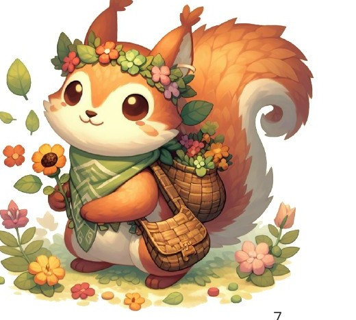
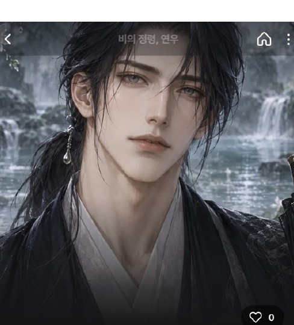

CHARACTER · CONTENT · EXPERIENCE
캐릭터와의
새로운 경험을
디자인합니다.
연구하고, 만들고, 좋아하는 마음으로.
캐릭터와 사람을 잇는 기획자 DANA입니다.
DANA PORTFOLIO
A WORLD OF CHARACTERS
another connection.


Another story,another connection.
01 / SELECTED PROJECTS
상상에서, 경험으로.
세계관부터 대화, 비주얼, 플레이까지.
캐릭터의 가능성을 다양한 형태로 만듭니다.
4개의 프로젝트
02 / RESEARCH & INSIGHT
좋아하는 마음을
연구하는 시선.
캐릭터 챗봇과 UI 요소가
사용자 경험에 미치는 영향 연구
“챗봇의 인터페이스 디자인은 감정적·인지적 경험에 영향을 줄까?”라는 질문에서 출발했습니다. 캐릭터 AI 챗봇 사례와 관련 문헌을 분석하고, 200명을 대상으로 설문을 진행했습니다.
KEY FINDING
말풍선을 변화시킨 집단이 5가지 변인에서 가장 큰 영향을 보였습니다.
03 / PERSONAL CREATION
직접 만드는 세계.
그림과 글, 만화와 굿즈.
AI를 사용하지 않은 창작 작업입니다.
04 / ABOUT DANA
모든 걸 흡수하는,
커비 같은 기획자.
캐릭터를 좋아하는 팬이자, 직접 만드는 창작자.
그 경험을 분석하고 연결하는 연구자이자 기획자입니다.
DANA CHARACTER & EXPERIENCE
PhotoshopIllustratorChatGPTMidjourneySuno
Design interests
01 / CHARACTER
캐릭터와 세계관
성격, 말투, 관계와 이야기를 연결합니다.
02 / EXPERIENCE
대화와 사용자 경험
캐릭터와 사람 사이의 감정적 연결을 살펴봅니다.
03 / CREATION
기획에서 시각 표현까지
비주얼, 사운드, 플레이를 하나의 경험으로 설계합니다.
CONTINUE THE STORY